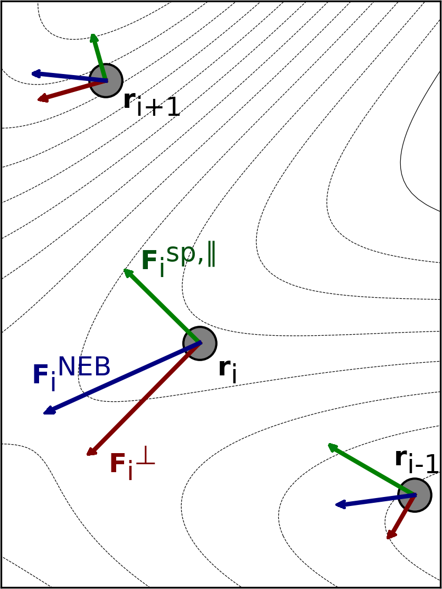
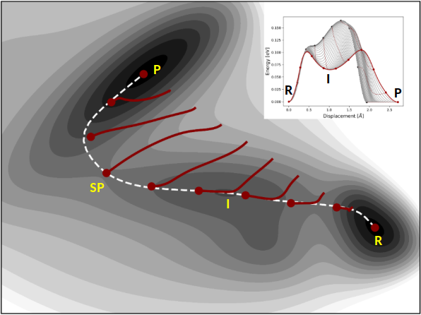

Nudged Elastic Band Method¶
Theory¶
The Nudged Elastic Band (NEB)Mills1995,Jonsson1998,Henkelman2000a method is used to find a minimum energy path (MEP) connecting two local energy minima on the potential energy surface (PES) and thereby an estimate of the activation energy for the transition. The two minima are referred to as the reactant and product in the following discussion. The path can have one or more maxima, each one corresponding to a first order saddle point on the energy surface. The NEB method offers an advantage over eigenvector-following methods in that it is guaranteed to find saddle points that connect the given reactant and product states. The minimum energy path is often used to represent the reaction coordinate of the transition between the two states. The methods and implementation outlined below are discussed further in Ref. Asgeirsson2021.
The user needs to specify the reactant and product configurations. The reactant energy minimum is inserted into the regular ORCA input file while the product should be in a separate .xyz file (keyword: neb_end_xyzfile). The reactant and product configurations should be optimized a priori by relaxing to energy minima on the PES, see section optimization.geometry. This can also be achieved via the 'preopt_ends' keyword. It is important to carefully prepare the reactant and product such that the position (or index) of the atoms is the same in the two configuration files, i.e. there should be one-to-one mapping between the reactant and product configurations.
The discretized path between the two minima is represented by a set of \(M\) system configurations that are referred to as images, i.e. \(R = [r_0, r_1, ..., r_{M-1}]\). The number of intermediate images between the end points (i.e. reactant and product) is specified by the user. The general rule of thumb is to include \(M=7-12\), or \(5-10\) intermediate images per energy maximum in order to obtain a high enough resolution of the path and the saddle point. However, calculations can often converge and give accurate results with fewer images but complex paths with multiple maxima or long tails may require more images. During an NEB calculation the intermediate images are iteratively shifted towards the MEP using the component of the atomic force that is perpendicular to the current path as estimated from the tangent to the path at each image, while the endpoint images are typically kept fixed. In each step of the iterative process, the energy and atomic forces of each intermediate image need to be computed. One of the main advantages of the NEB method is that the calculations of the images are carried out in parallel, where the electronic structure computations can be distributed over multiple processors (see discussion below for more details on the parallelization). While the CPU time is proportional to the number of images, the number of iterations needed for convergence to the MEP can become smaller when more images are included in the discrete representation of the path.
The tangent to the path at each image, \(\hat{\tau}_i\), can be estimated in two ways (keyword: tangent), either by the original method Jonsson1998 or by the more numerically stable improved Henkelman2000a estimate (default option). In the former, the tangent at an image is taken to be a linear combination of the two line segments that connect to image \(i\),
In the improved tangent estimate, the line segment from the current image to the adjacent image with higher energy is used, i.e.
where \(\tau^+ = r_{i+1}-r_i\) and \(\tau^- = r_{i}-r_{i-1}\). With the exception of image \(i\) being at an energy extremum along the path, then an energy-weighted average of the two line segments to adjacent images is used,
where
Then the tangent is normalized, \(\hat{\tau}_i = \tau_i/|\tau_i|\). With an accurate estimate of the tangent, the perpendicular component of the atom force is computed by,
In the free-end NEB method, the endpoint images are optimized simultaneously along with the intermediate images, i.e. \(M\) movable images are used. Three different variants of the free-end NEB method (keywords:free_end, free_end_type) are included in ORCA: where (i) the endpoints are restrained to move along the same (or separate) energy isocontourZhu2007,Asgeirsson2018, (ii) according to the atomic force acting perpendicular to the path and (iii) the full atomic force. For the first variant, the 'reactant' and 'product' endpont images, can be restrained to move along two different energy contours, \(E_0\) (given by keyword:free_end_ec) and \(E_1\) (given by keyword: free_end_ec_end), to keep the path bounded. Then, if the images drift away from the isocontour because of curvature of the energy surface, an harmonic restraint term is used to pull the image back to the contour.Asgeirsson2018 The stiffness of the harmonic restraint is given by a user-supplied parameter (keyword:free_end_kappa). It is important to carefully select the energy values and the strength of the harmonic restraint, otherwise the path may become kinked. For the second variant, the endpoint images are unbounded but displaced directly towards the MEP. This is typically acceptable if the endpoint images are already in vicinity to the MEP and is less prone to kinks developing along the path. For the third variant, the endpoint images become optimized to the reactant and product energy minimum.
Spring Forces¶
In order to control the distribution of the images along the path, spring forces are included to act between adjacent images, tangential to the pathJonsson1998,
The magnitude of the spring forces (i.e. stiffness) is controlled by spring constants, \(k^\text{sp}\). The typical values of the spring constant (keyword: springconst) can be taken to be within the range of 0.01 Eh/Bohr\(^2\) to 1.0 Eh/Bohr\(^2\). If the spring constants are choosen to be the same for all pairs of adjacent images, the images will be equally distributed along the path. However, it is also possible to choose energy-weighted spring constants (keyword: energy_weighted) so as to increase the density of images in the higher energy regionsHenkelman2000b,Asgeirsson2021. In an energy-weighted NEB calculation the spring constants are scaled according to the relative energy of the images, from a lower-bound value (keyword:springconst) to an upper-bound value (keyword:springconst2), by
where \(k_{\text{u} }\) and \(k_{\text{l} }\) are the upper- and lower-bound values for the spring constant. \(E_\text{max}\) is the current estimate of the maximum energy along the path, \(E_i\) is the higher energy image of the pair of images connected by line segment \(i\) and \(E_\text{ref}\) is the energy of the higher energy minimum. The energy-weighted springs will typically serve to improve the tangent estimate in the barrier region and hence stabilize the calculations. The inclusion of energy-weighted springs can be important in reactions where the energy barrier is narrow and/or the pathway is characterized by a long 'energy tail', e.g., in rearrangements or dissociation reactions. The choice of spring constants will affect the behavior of a calculation, especially the number of iterations needed to reach convergence. Other formulations for spring forces are also available since ORCA 4.2 (keyword: springtype). These are referred to as the originalJonsson1998 and idealMaras2016 spring forces. The original spring forces are estimated by a spring acting on each degree of freedom between a pair of adjacent images. For ideal springs each image is assigned an ideal position along the path based on a linear interpolation of the current location of the images and the individual images interact with the ideal locations via spring forces. The ideal springs are currently not implemented to work with energy weighted spring constants. While only the component of the spring force parallel to the path is included in an NEB calculation (by default) the user can choose to include a fraction of the spring force acting perpendicular to the path to stabilize calculations (keyword: perpspring. Since, the perpendicular component of the spring force can serve to straighten out the path and is useful for complex pathways with multiple energy extrema and low resolution of the path. The inclusion of the perpendicular component of the spring force is always accompanied by a switching function that is used to scale it according to (i) convergence to the MEP (the 'tan' function)Sheppard08 (ii) the angle between adjacent images (the 'cos' function)Jonsson1998 or a combination of both. The inclusion of the perpendicular spring force can help to reduce the number of iterations and eliminate kinks on the path. However, it is important to stress that by inclusion of the perpendicular spring forces, the images may not converge on the MEP. Alternatively, the user can choose to use the modified DNEB methodDNEB2005,Sheppard08.
Optimization and Convergence of the NEB Method¶
The effective force used in a standard NEB calculations is the sum of the atomic force component perpendicular to the path and the spring force component parallel to the path,
The path can be brought to the MEP by moving according to the effective force, as is shown in fig:neb-forces.

Visualization of the effective force, \(F^\text{NEB}\) and its two components: \(F^\perp_i\) and \(F^{\text{sp},\parallel}_i\) for three images along an intermediate path in a NEB optimization. The figure is taken from Ref. Asgeirsson2021b This can be achieved by using any of the three optimization methods implemented (keyword:opt_method): velocity projection optimization (VPO)Jonsson1998, fast inertial relxation engine (FIRE)Bitzek2006 and L-BFGSLBFGS. VPO and FIRE are more robust for regions that are far from the MEP, while L-BFGS converges faster when the images are close to the MEP. FIRE and VPO both have a local and global implementation (keyword:local). In the local variant, all of the images are treated individually when taking an optimization step, while in the latter the whole band is treated as a single point. A constant 'trust-radius' is used for all optimization methods, where if the magnitude of the maximum Cartesian component of an optimization step exceeds a user-supplied threshold (keyword:maxmove), the whole displacement is scaled down accordingly. The number of steps stored in the L-BFGS optimization for the construction of the approximate Hessian matrix can be adjusted by the user (keyword:lbfgs_memory). For a more conservative optimization with L-BFGS, the memory can also be erased if a large step is attempted (keyword:lbfgs_restart_on_maxmove). The convergence of the intermediate images is gauged from the maximum Cartesian component of the perpendicular atom force as well as the root-mean-square, i.e. \(\max(|F^\perp|), \text{RMS}(F^\perp)\). The atomic force on the images perpendicular to the path vanishes as the images are located on the MEP. A typical value of the tolerance for the maximum component of the atomic force perpendicular to the path is \(1\cdot10^{-3}\) Eh/Bohr. Typically the tolerance for the root-mean-square value is chosen to be smaller by a factor of 1/2 or 1/3. Sometimes a tighter tolerance for the maximum component of the force is needed, for example \(5\cdot 10^{-4}\) Eh/Bohr or even \(2 \cdot 10^{-4}\) Eh/Bohr. The maximum number of optimization steps allowed is set by the keyword 'maxiter'. The configuration of each image after each iteration is written to a '_trj.xyz' file (see file: basename_MEP\(\_\)ALL_trj.xyz). This file is useful for troubleshooting non-convergent calculations.Climbing Image NEB (CI-NEB)¶
In order make the highest energy image converge more accurately to the (highest) energy maximum along the MEP, the climbing image variant of the NEB method (CI-NEB) can be used. Henkelman2000b In the CI-NEB method, the effective force \(F^\text{NEB}\) acting on the climbing image (i.e. \(i=\text{ci}\)) is transformed to:
where the climbing image is pushed up-hill along the path and relaxed down-hill perpendicular to the path. That is, the energy is maximized with respect to one degree of freedom corresponding to the direction of the tangent while the energy is minimized with respect to all other degrees of freedom. The effective force on the climbing image does not include any spring force and the density of images then becomes different on either side of the climbing image. As long as the tangent estimate is accurate enough the climbing image will converge rigorously to the point of highest energy along the path. An illustration of how the climbing image NEB method works is shown in fig:cineb-mb for a simple two-dimensional energy function.

Illustration of how the CI-NEB method works on a two-dimensional Müller-Brown energy surface, \(E(x,y)\).Muller1979 The calculation is started from a linear interpolation between the reactant (R) and product (P) energy minima, using \(M=10\). The images are displaced in the orthogonal direction to the path (red curves), until they converge to the minimum energy path (white dashed curve). The climbing image accurately locates the higher energy first-order saddle point along the path (denoted by SP). The optimization profile is shown as an inset. In such a plot the interpolated energy along the path is plotted as a function of displacement, for each (or selected) optimization step. The figure is taken from Ref. Asgeirsson2021b It can be useful to start the climbing image after the magnitude of the atomic forces perpendicular to the path drops below a given user supplied threshold (keyword: tol\(\_\)turn\(\_\)on\(\_\)ci). Then, the highest energy image along the current path is converted to a climbing image. It is usually most efficient to initiate the climbing image early on or even from the start of the NEB calculation. This applies when using the VPO optimization method. For L-BFGS it is recommended to start CI-NEB when the path has partially converged to the MEP, e.g., around 0.01-0.02 Eh/Bohr. If there are two or more maxima in the energy along the MEP it is possible that the image near the highest maximum is not chosen as the climbing image at an early stage of the NEB calculation. Then, later on the choice of the climbing image can be switched automatically. Also, for barrierless reactions, the climbing image is not turned on. The atom coordinates of the climbing image (in a CI-NEB calculation) or the highest energy image (in an NEB calculation) are written to files '_NEB-CI\(\_\)converged.xyz' and '_NEB-HEI\(\_\)converged.xyz', respectively, when a calculation has successfully completed. The convergence of a CI-NEB calculation can either be gauged by monitoring the forces on all images or only on the climbing image, (keyword: convtype). The latter option may be used when the objective of the calculation is to locate the highest energy saddle point connecting the reactant and product states and can save significant computational effort. To gauge for convergence on the climbing image, both the root-mean-square and magnitude of the maximum (Cartesian) component of the atom force are monitored, i.e. \(\max(|F_\text{ci}|), \text{RMS}(F_\text{ci})\). When gauging the convergence of all images in a CI-NEB calculation it is typically acceptable to converge the regular images more loosely than the climbing image. By default, the tolerance for the regular images is a factor of 10 larger than that of the climbing image. This scaling of the tolerances is a parameter that can be set by the user (keyword: tol_scale). Typically for an acceptable convergence to the saddle point, the tolerance threshold for the maximum magnitude of an atomic force component of the climbing image can be set to \(5\cdot 10^{-4}\) Eh/Bohr.Generation of the Initial Path¶
One of the most important aspects of any NEB or CI-NEB calculation is the generation of the initial path between the reactant and product energy minima (keyword: interpolation). The recommended method is the image-dependent pair potential (IDPP) method IDPP2014. An alternative and simpler method is linear interpolation in Cartesian coordinates. In either case, the user should always inspect the initial path (see file: basename\(\_\)initial\(\_\)path_trj.xyz) to make certain that it is acceptable. By default, the endpoint structures are scanned for covalently linked fragments. If two fragments are detected in either of the endpoint structures, the structure is automatically prepared such that the distance between the fragments is no larger than a maximum distance defaulted to 3.5 Angstrom. The linear interpolation in Cartesian coordinates may result in overlap of atoms leading to large, initial, atomic forces and even divergence in the SCF cycles. The IDPP method solves these problems by interpolating pairwise distances between neighboring atoms in the reactant and product energy minimum. Then, a path is generated to match those distances as closely as possible. Since there are many more pairwise distances than atom coordinates, the initial path is found by minimizing the objective function,
where \(d_{AB}\) is the pairwise distance between atoms \(A\) and \(B\) for intermediate image \(i\). \(d^\kappa_{AB}\) is the ideal interpolated distance between atoms \(A\) and \(B\) of the same image. \(w\) is a weight function to give shorter bond distances more weight and make unnecessary bond-breaking unfavorable. The weight function is given as \(w = (d_{\text{AB} })^{-4}\). The IDPP path avoids the overlap of atoms and can also generate a path that is closer to the MEP than the linear interpolation in Cartesian coordinatesIDPP2014. The IDPP path is obtained from an NEB calculation using the IDPP objective function starting from a linear interpolation of the Cartesian coordinates between the endpoint structures, but this calculation requires little computational effort since it does not require any electronic structure computations. Note that it is possible that the initial path breaks covalent bonds and that it can be far from the optimal MEP. If this is the case, the default algorithm detects it and automatically regenerates a different IDPP initial path. This is repeated until either an initial path without unnecessary bond changes is obtained or all initial path option are exhausted, at which point the best initial path is identified. In any case, the user should always inspect the initial path before starting an NEB calculation. The user can adjust the settings of the IDPP calculations using the 'idpp' related keywords, but the default values should suffice for most applications. Note that the units of the IDPP are in Ångströms instead of atomic units. The matrix of ideal interpolated distance between the atoms \(A\) and \(B\) at image \(i\), \(d_{AB,\ i}^\kappa\,\), is most simply obtained by linear interpolation as
where \(P_{i} = \frac{i}{n_{im} - 1}\) is the position of image \(i\) on the path between 0, corresponding to the initial image, and 1, corresponding to the final image, and \(n_{im}\) is the total number of images.
As this linear distance interpolation may not be ideal, one can alternatively choose a bilinear distance interpolation scheme that takes atomic bonds into account. Bonds between the atoms \(A\) and \(B\) in the initial and final images are identified if their distance \(d_{AB} < t_{bond} = t_{c}\left(R_{A}^{cov} + R_{B}^{cov}\right)\,,\) where \(t_{c}\) is an input factor impacting at what distances a bond is detected by default taken to be 1.3, and \(R_{X}^{cov}\) is the covalent radius of atom \(X\). If a bond is detected in one of the endpoint structures but not the other, two linear distance interpolations are performed to obtain \(d_{AB, i}^{\kappa}\). The first interpolates the distance between the endpoint structure in which the atoms are bonded and \(t_{bond}\), the second interpolates the distance between \(t_{bond}\) and the endpoint structure in which the bond is broken. The two linear distance interpolations are joined at the path position \(P_{join}\) defaulted to 0.5, corresponding to the midpoint on the path between the endpoint images. If the atoms are bonded in the initial structure but not in the final structure, the interpolation is
If the atoms are bonded in the final structure but not in the initial structure, the interpolation is
This bilinear interpolation leads to a slower increase of the atom distance in the bonded region compared to the non-bonded region in most cases, emphasizing the bond-breaking process and thus the region where the energy is changed most by a change in the bond distance. If the change in the bond distance in the non-bonded region is slower than the change in the bonded region, the implementation falls back to the regular linear distance interpolation.
In challenging cases, even the IDPP NEB calculation starting from a linear interpolation of the Cartesian coordinates between the endpoint structures may not provide a reasonable initial path. This may happen when the linear interpolation path has atoms come very close to each other in intermediate images, which leads to bond breaking even after NEB optimization using the IDPP objective function. In such cases, a reasonable initial path can often be obtained by avoiding the linear interpolation by sequentially adding images to the path starting from both endpoint structures instead. This method is referred to as sequential IDPP (S-IDPP).Schmerwitz2024a The two sets of images close to each endpoint structure are separated by a larger distance than the images in each set by choosing a smaller spring constant than between the images in each set where equal spring constants are used. The images closest to the center are converged in an NEB calculation and an image added at an appropriate distance from the converged image between the two images closest to the center. This process is repeated until the requested amount of images has been added. The tangent of the images closest to the center follows the improved tangent definition and always treats them as extrema on the path, i.e. an average of the normalized distance vectors to the adjacent images is used. The number of images used to form the S-IDPP initial path can be different from the number of images used in the subsequent NEB calculation involving electronic structure calculations. It can be beneficial to use an even number of images in the S-IDPP computation since no image is placed at the center of the initial path then and moving to the requested odd number of images in an additional IDPP NEB calculation afterwards. This option is used by default, but can be deactivated. For systems involving very heavy rotations of large groups, the method becomes more robust when twice the amount of images is used in the S-IDPP calculation. Half the images are then removed automatically for the subsequent NEB calculation involving electronic structure calculations. This option is available, but not used by default.
The initial path generated with the chosen settings is checked for unnecessary bond breaking or bond formation. Bonds between the atoms \(A\) and \(B\) are identified if their distance \(d_{AB} < t_{bond} = t_{c}\left(R_{A}^{cov} + R_{B}^{cov}\right)\,,\) where \(t_{c}\) is an input factor impacting at what distances a bond is detected by default taken to be 1.3, and \(R_{X}^{cov}\) is the covalent radius of atom \(X\). A change in the connectivity of atoms \(A\) and \(B\) is considered unnecessary if their connectivity does not change between the endpoint structures. If it does changebe tween the endpoint structures, the connectivity is allowed to change exactly once, but any further connectivity changes along the initial path are considered unnecessary. If any unnecessary connectivity changes occur on the initial path, the flexibility of S-IDPP is used to generate more initial paths with different settings systematically, until one without unnecessary connectivity changes is obtained. The parameter space for this hyperparameter search consists of all combinations of the settings SIDPP_Reparam, SIDPP_Energy_Weighted_Tangent, SIDPP_Even_NIm, SIDPP_Double_NIm, SIDPP_Ideal_Springconst, and four values (0.05, 0.01, 0.005, and 0.001) for SIDPP_Tol_MaxF, leading to a total of 128 options in addition to the chosen settings. Once an initial path without unnecessary connectivity changes is found, the hyperparameter search is terminated. In the unlikely scenario that none of the generated initial paths show no unnecessary connectivity changes, the initial path with the fewest is taken by default, but the user may prefer to have the calculation abort to inspect the initial path, which may be set with the keyword SIDPP_HyperSearch_StrictConnectivity.
Note
In certain cases, for instance rotations of large sterically limited groups in a molecule, the reaction may only be possible by breaking and reforming a bond along the MEP. You may not always be looking for an initial path completely free of unnecessary connectivity changes!
The user may have a preconceived notion of the saddle point configuration or have an estimate of the path from a calculation carried out at a lower level of theory. The initial path can be generated in such a way as to include an intermediate configuration as one of the images using the 'NEB_TS_XYZFile' keyword. Since this image will be optimized along with the other intermediate images during the NEB calculation the guess does not have to be accurate.
If inspection of the initial path reveals problems, e.g., unnecessary bond breaking, it is often a good idea to insert a reasonable configuration into the initial interpolation to avoid such problems. Moreover, if an NEB calculation is unable to converge to the MEP (or saddle point) with the given maximum number of iterations, the user can restart the calculation from the 'allxyz' file (see file: basename_MEP.allxyz) which is written to the disk after each iteration during the optimization. Note, when starting an NEB calculation from an output from a previous CI-NEB calculation and vice-versa the band may require a few iterations to adjust the distribution of images to achieve the desired distribution, depending on the selected spring type and the choice of NEB method.
If the system can be modeled reasonably well using the GFN-xTB method, another possible choice is the generation of an initial path on XTB level (keywords 'XTB0', 'XTB1' or 'XTB2' for GFN0-xTBpracht2019xtb GFN-xTBgrimme2017xtb or GFN2-xTBgrimme2019xtb). In this case the initial path on IDPP level is refined using an NEB calculation on the chosen XTB level. If this NEB run is successful, the entire MEP on XTB level is used as the initial path. If the NEB run on XTB level is not successful, the initial path on IDPP level is used instead.
Another keyword that makes use of the XTB method is the 'XTBTS' keyword ('XTB0TS', 'XTB1TS' or 'XTB2TS'). In this case the initial path on IDPP level is refined using an NEB-CI calculation on XTB level. If the NEB-CI run is successful, the resulting CI structure is chosen as TS guess structure, and the final initial path is generated using an IDPP path from reactant to TS guess and from TS guess to product. If the NEB-CI run on XTB level is not successful, the initial path on IDPP level is used instead.
Removal of Translational and Rotational Degrees of Freedom¶
For NEB and CI-NEB calculations of molecular systems it is important to project out the six (or five in the case of linear molecules) degrees of freedom corresponding to the global rotation and translation of the system. This can be done either at the start of a calculation or for each optimization step (keyword: quatern). For the latter, the center-of-geometry of each image is translated to origin and a rotational matrix is constructed using the quaternion approachmarko2016 to minimize the root-mean-square deviation between any two adjacent images. Depending on whether a fixed center is used (keyword: fix_center), the images are either kept in that place or transferred back to their original position. This procedure is repeated for any pair of adjacent images in each step of the optimization. Also, the net effective NEB force is set to zero (keyword: remove_extern_force).removetranslation1998
Optimizations using the Nudged Elastic Band Method¶
So to recap - the Nudged Elastic Band (NEB) method is used to find a minimum energy path (MEP) connecting given reactant and product state minima on the energy surface. An initial path is generated and represented by a discrete set of configurations of the atoms, referred to as images of the system. The number of images is specified by the user and has to be large enough to obtain sufficient resolution of the path. The implementation in ORCA is described in detail in the article by Ásgeirsson et. al.Asgeirsson2021 and in section structurereactivity.neb along with the input options. The most common use of the NEB method is to find the highest energy saddle point on the potential energy surface specifying the transition state for a given initial and final state. Rigorous convergence to a first-order saddle point can be obtained with the climbing image NEB (CI-NEB), where the highest energy image is pushed uphill in energy along the tangent to the path while relaxing downhill in orthogonal directions. Another method for finding a first-order saddle point is the NEB-TS which uses the CI-NEB method with a loose tolerance to begin with and then switches over to the OptTS method to converge on the saddle point. This combination can be a good choice for calculations of complex reactions where the ScanTS method fails or where 2D relaxed surface scans are necessary to find a good initial guess structure for the OptTS method. The zoomNEB variants are a good choice in case of very complex transition states with long tails. For more detailed information on the various NEB variants implemented in ORCA please consult section structurereactivity.neb.
In their simplest form NEB, NEB-CI and NEB-TS only require the reactant and product state configurations (one via the xyz block, and the other one via the keyword neb_end_xyzfile):
!NEB-TS # or !NEB or !NEB-CI or !ZOOM-NEB-TS or !ZOOM-NEB-CI
# or !Fast-NEB-TS (corresponds to IDPP-TS defined
# in the NEB-TS manuscript)
# or !Loose-NEB-TS (corresponds to default NEB-TS
# in the NEB-TS manuscript)
%neb
neb_end_xyzfile "final.xyz"
end
Below is an example of an NEB-TS run involving an intramolecular proton transfer within acetic acid. The simplest input is
8 structure (0 1) C 0.416168 0.038758 -0.014077 C 0.041816 0.011798 1.439610 O 1.524458 0.176600 -0.453888 O -0.654209 -0.127881 -0.803857 H -0.391037 -0.126036 -1.737478 H -0.913438 0.507022 1.585301 H -0.057787 -1.026455 1.750845 H 0.819515 0.485425 2.030252
!XTB NEB-TS %neb neb_end_xyzfile "final.xyz" end *xyz 0 1 C 0.416168 0.038758 -0.014077 C 0.041816 0.011798 1.439610 O 1.524458 0.176600 -0.453888 O -0.654209 -0.127881 -0.803857 H -0.391037 -0.126036 -1.737478 H -0.913438 0.507022 1.585301 H -0.057787 -1.026455 1.750845 H 0.819515 0.485425 2.030252 *
Where the final.xyz structure contains the corresponding structure with the proton on the other oxygen.
The initial path is reasonable and the CI calculation can be switched on after five NEB iterations.
Starting iterations:
Optim. Iteration HEI E(HEI)-E(0) max(|Fp|) RMS(Fp) dS
Switch-on CI threshold 0.020000
LBFGS 0 4 0.081017 0.073897 0.018915 3.2882
LBFGS 1 5 0.070244 0.056668 0.013913 3.2770
LBFGS 2 5 0.062934 0.038972 0.008763 3.3376
LBFGS 3 5 0.057358 0.032076 0.006535 3.3950
LBFGS 4 4 0.053260 0.019015 0.003599 3.4826
Image 4 will be converted to a climbing image in the next iteration (max(|Fp|)<0.0200)
Optim. Iteration CI E(CI)-E(0) max(|Fp|) RMS(Fp) dS max(|FCI|) RMS(FCI)
Convergence thresholds 0.020000 0.010000 0.002000 0.001000
The CI run converges after another couple of iterations:
*********************H U R R A Y*********************
*** THE NEB OPTIMIZATION HAS CONVERGED ***
*****************************************************
Subsequently a summary of the MEP is printed:
---------------------------------------------------------------
PATH SUMMARY
---------------------------------------------------------------
All forces in Eh/Bohr.
Image Dist.(Ang.) E(Eh) dE(kcal/mol) max(|Fp|) RMS(Fp)
0 0.000 -14.45993 0.00 0.00011 0.00004
1 0.426 -14.44891 6.91 0.00092 0.00033
2 0.652 -14.42864 19.63 0.00084 0.00038
3 0.805 -14.41132 30.50 0.00075 0.00027
4 0.932 -14.40562 34.08 0.00057 0.00018 <= CI
5 1.044 -14.41047 31.03 0.00057 0.00024
6 1.153 -14.42200 23.80 0.00103 0.00034
7 1.280 -14.43666 14.60 0.00098 0.00037
8 1.476 -14.45106 5.56 0.00106 0.00033
9 1.869 -14.45988 0.03 0.00013 0.00006
Additionally, detailed information on the highest energy image (or the CI) is printed:
10 structure C 0.040867 0.007347 -0.497635 C -0.075595 0.017879 0.979075 O 1.122340 0.126074 -1.145534 O -0.928470 -0.137946 -1.298318 H 0.165808 -0.021676 -2.055704 H -0.996979 0.514720 1.271668 H -0.116377 -1.013504 1.327873 H 0.788406 0.507105 1.418575 C -0.000646 -0.000111 0.000086 C -0.246569 -0.031821 -0.019359
Finally, a TS optimization is started, after which the MEP information is updated by including the TS structure:
---------------------------------------------------------------
PATH SUMMARY FOR NEB-TS
---------------------------------------------------------------
All forces in Eh/Bohr. Global forces for TS.
Image E(Eh) dE(kcal/mol) max(|Fp|) RMS(Fp)
0 -14.45993 0.00 0.00011 0.00004
1 -14.44891 6.91 0.00092 0.00033
2 -14.42864 19.63 0.00084 0.00038
3 -14.41132 30.50 0.00075 0.00027
4 -14.40562 34.08 0.00057 0.00018 <= CI
TS -14.40562 34.08 0.00033 0.00013 <= TS
5 -14.41047 31.03 0.00057 0.00024
6 -14.42200 23.80 0.00103 0.00034
7 -14.43666 14.60 0.00098 0.00037
8 -14.45106 5.56 0.00106 0.00033
9 -14.45988 0.03 0.00013 0.00006
Note that here both TS and CI are printed for comparison.
Reparametrization of the Path¶
In some cases it may be beneficial to enable redistribution of the images along the path every \(N\) iterations (i.e. analogous to the string methodE2002) (keyword: reparam). The path is then interpolated using either a linear or cubic polynomial fitted to both the coordinates and the tangent to the path, and the images are redistributed evenly along the interpolated path. Both \(N\) and the type of interpolation are specified by the user (keyword: reparam_type). The cubic interpolation method should be better in calculations where the resolution of the path and hence the estimate of the tangent is good, while the linear interpolation is generally more robust as it is not as dependent on the tangent.
Useful Output¶
After each iteration, the energy profile along the path is obtained by making a piecewise cubic polynomial interpolation using both the energy and the component of the atom force tangentinal to the pathHenkelman2000a. The interpolation can reveal important information about the MEP in locations between the intermediate images. The interpolation is written to the file 'interp' (see file: basename.interp) in each step of the optimization. Moreover, as NEB and CI-NEB calculations can be quite computationally demanding and in order to properly analyze what may have gone wrong in such a calculation, the user can inspect the '.log' file, which includes information about the type of calculation, energy, length of the path, spring forces, atomic forces etc.
Important Warning Messages¶
Some tests are carried out during the optimization in order to detect problems on the fly. The angle between the two straight lines going through an image and its neighbors on each side is calculated. If the angle becomes large e.g. exceeding 90\(^\circ\) the estimate of the tangent has likely become inaccurate and a better resolution of the path is required. If the angle is close to 180\(^\circ\) the ordering of the images may have become incorrect. Especially in the latter case, it may be a good choice of action to terminate the calculation and include a larger number of intermediate images in the subsequent calculation. Some information from the calculation, e.g, a guess for the saddle point, could be incorporated in the new calculation.
Another issue is the identification of an intermediate minimum along the path. If an intermediate minimum is observed in \(M\) subsequent iterations (\(M\) is supplied by the user) a warning is issued to the user that a possible intermediate minimum may exist along the path. It is a good idea to check the status of the calculation, the path and the convergence behaviour. If the calculation appears to be proceeding normally and heading for convergence, the best course of action is to allow the calculation to finish. However, it is in general better to carry out separate NEB calculations for segments of the MEP on either side of the intermediate minimum. Especially, if the intermediate minimum is deep w.r.t to the reactant and product state energy minima.
In such cases, the image closest to the apparent intermediate minimum is selected and a structural minimization is carried out. The resulting configuration is then used as the initial state or final state in the subsequent CI-NEB calculations.
Parallel Execution¶
If the number of processes (NProcs) specified in the input is larger than 1, NEB will automatically start up in multi-process mode:
NProcs \<= NImages
: NProcs processes will handle NProcs images independently with 1 process per image. Choose NProcs = X*NImages (e.g. X = 1 or 0.5)
NProcs > NImages
: NProcs processes will handle NImage images, each image being treated by (NProcs/ NImages) processes. If you want to dedicate more than 1 process to each single image-calculation, choose NProcs = X*NImages (e.g. X = 2, 3, 4, ...).
Note: If in the second case multiple compute-nodes are involved, the user will need to define the ORCA-specific environment variable RSH_COMMAND, which tells the NEB driver how to connect to the individual nodes (set it to either 'rsh' or 'ssh'). However, this may not work with all queueing systems.
If the energy and force calculations are fast (e.g. with semiempirical methods), there is no gain in using multiple processes per image. Starting up and finalizing MPI may consume more time than the gain from parallel processing.
Zoom-NEB¶
A preliminary version of the Zoom-NEB (Z-NEB) method has been included in this implementation, where the objective of the method is to locate a saddle point more accurately with a better resolution compared to CI-NEB calculations. The Z-NEB method is an automatic two-step procedure, where in the first step a CI-NEB calculation is carried out to obtain a rough convergence towards the MEP. Then, the region surrounding the highest energy maximum along the path is identified and a new set of images is distributed along this region. In the second step, a free-end CI-NEB calculation is started from this new path. In this calculation, the endpoints are optimized according to the atom force acting perpendicular to the path. This will ensure that the endpoints of the second CI-NEB calculation will converge to the MEP, as well. Furthermore, to maintain the parallelization of the CI-NEB method, the same number of movable images are used in the first and second CI-NEB calculations.
NEB-TS¶
Probably the most efficient saddle point search methods are obtained when double-ended methods (e.g. NEB) are combined with single-ended methods (e.g., eigenvector-following). In the current implementation, a combination of EW-CI-NEB and EF P-RFO (eigenvector-following partitioned rational function optimization) methods is presented and referred to as the NEB-TS method Asgeirsson2021.
In NEB-TS, the EW-CI-NEB method is used to partially converge to the MEP and hence saddle point, i.e., the optimization of the images along the MEP is halted once the climbing image is converged to a prescribed tolerance. Then, the climbing image is used to provide a subsequent eigenvector-following calculation with an accurate initial guess configuration, as is shown in fig:nebts-mb and the tangent at the CI is used to select the eigenvector to be followed. The tangent estimate should already provide an accurate approximation to the unstable mode at the saddle point. The initial Hessian matrix needed for the eigenvector-following calculation can either be computed analytically (if available) or taken as the Almlöf empirical Hessian matrix fischer1992phys. If the Almlöf Hessian matrix is used, the curvature at the CI is estimated by using a finite difference approximation (i.e. using the atom force acting on the neighboring images to CI) and used to scale the corresponding eigenvalue of the selected eigenvector, allowing the eigenvector-following calculation to be started from a Hessian matrix of the correct form. The typical '%geom' block can be used to modify the settings of the eigenvector-following calculation.

Illustration of how the NEB-TS method works on a two-dimensional Müller-Brown energy surface, \(E(x,y)\) Muller1979. The calculation is started from a linear interpolation between the reactant and product energy minima, using \(M=10\). The images are displaced in the orthogonal direction to the path (red curves) using the CI-NEB algorithm, until a rough convergence to the minimum energy path (white dashed curve) is obtained. The climbing image then provides an approximate saddle point configuration that can be used to start eigenvector-following partitioned rational function optimization to accurately (and swiftly) identify the (higher energy) first-order saddle point. The figure is taken from Ref. Asgeirsson2021
FAST-NEB-TS and LOOSE-NEB-TS¶
Since our first NEB-TS implementation, we investigated a lot more settings and variants, see Asgeirsson2021. Based on those findings, two new algorithms and convergence threshold settings have been implemented into ORCA. FAST-NEB-TS corresponds to the IDPP-TS in the paper, and LOOSE-NEB-TS corresponds to the actual NEB-TS defaults, which are defined in the paper. Both features, FAST- and LOOSE-NEB-TS, show slightly lower robustness, but need significantly fewer NEB cycles.
NEB / NEB-TS and TD-DFT¶
The NEB and NEB-TS algorithm now also works in combination with TD-DFT. The input:
not only computes the MEP and TS of the first excited state, but it also prints out (after NEB convergence) the excited state as well as ground state energies over the MEP:
-----------------------------------------
Image E0 Root 1
-----------------------------------------
0 -67.203 0.000
1 -66.443 1.517
2 -54.382 5.774
3 -42.483 10.473
4 -32.798 14.323
5 -28.056 16.108
6 -34.102 13.915
7 -48.125 8.249
8 -64.188 2.212
9 -67.066 0.018
You can even request an NEB-TS calculation on the ground state PES, and at the same time gain information on the excited PES via the input:
During this NEB calculation, only ground state energies and gradients are computed. Only after NEB convergence, the additional excited state energies are computed on each image, in order to yield the ordering of the states on the MEP:
-----------------------------------------
Image E0 Root 1
-----------------------------------------
0 0.000 121.545
1 6.281 128.198
2 21.434 143.835
3 35.437 151.581
4 43.223 155.579
5 43.235 155.501
6 35.472 151.495
7 21.498 143.715
8 6.395 128.060
9 0.166 121.425
Summary of Keywords¶
The following keywords are available:
! NEB # NEB calculation
! NEB-CI # Climbing Image NEB calculation
! NEB-TS # NEB calculation plus subsequent TS optimization
! FAST-NEB-TS # NEB calculation with one iteration only plus subsequent TS opt.
! LOOSE-NEB-TS # NEB calculation with default convergence criteria
# from NEB-TS paper
! TIGHT-NEB-TS # NEB calculation with tighter convergence criteria plus
# subsequent TS optimization
! ZOOM-NEB # NEB calculation plus zoomed NEB calculation
! ZOOM-NEB-CI # Climbing Image NEB plus zoomed climbing image NEB calculation
! ZOOM-NEB-TS # NEB calculation plus zoomed NEB calculation plus subsequent
# TS optimization
! NEB-IDPP # IDPP (Initial Path) NEB calculation - for estimation of path
# length
%neb
Product "product.xyz" # product structure. Input is mandatory.
NImages 8 # default 8. Number of images without fixed endpoints,
# for free_end total number of images
PrintLevel 1 # default 1. Normal printout. Use 0 for no printout, higher
# numbers (<=4) for more detailed printout.
TS "TSGuess.xyz" # Provide guess for the TS structure. Images
# are interpolated between reactant and TS guess
# and between TS guess and product.
NEB_TS_Image 3 # default -1. Number of the image the TS guess is used for.
# If not defined (=-1), the image which gives lowest RMSD
# for all image distances is used.
# Restart option: After each iteration the NEB method stores all image
# structures in an .allxyz file. In case of an abort this file can be used
# for a restart. File should contain the structures for all images.
Restart_ALLXYZFile "NEB1.allxyz"# use the trajectory from file if filename is
# provided
# Alternatively, NEB can be started on user-prepared wavefunctions for each image.
# The names of these wavefunction files should consist of a user-chosen basename
# and the extension '_imN.gbw', where N is the image number.
# The basename should be provided in the input, ORCA will add extension '_imN.gbw'
Restart_GBW_BaseName "NEB2" # use the wavefunctions from file NEB2_imN.gbw
# Check SCF convergence: If true, SCF convergence is checked for and
# calculation aborts if:
# -any of the images does not show SCF convergence in four subsequent cycles.
# -any of the images does not show SCF convergence in two subsequent cycles
# after the gradient is converged.
CheckSCFConv true # default true
# PDB file input format:
Product_PDBFile "product.pdb" # Product structure in pdb format. If this is
# given, xyz does not need to be given.
TS_PDBFile "TSGuess.pdb" # TS guess structure in pdb format. If this is
# given, xyz does not need to be given.
Free_End false # Use free-end NEB. In this case the NImages
# corresponds to the total number of images.
PreOpt false # do optimization of reactant and product in
# internal coordinates before NEB starts
NSteps_FoundIntermediate 30 # Number of steps the intermediate has to be
# present
AbortIf_FoundIntermediate false # If an intermediate is found abort the run.
NPTS_Interpol 10 # Number of abscissa in cubic polynomial
# interpolation
Interpolation IDPP # Method to generate the images based on the
# reactant, product (and potentially TS guess)
# linear
# IDPP
# XTB0TS - TS on GFN0-xTB level
# XTB0 - entire path on GFN0-xTB level
# XTB1TS - TS on GFN1-xTB level
# XTB1 - entire path on GFN1-xTB level
# XTB2TS - TS on GFN2-xTB level
# XTB2 - entire path on GFN2-xTB level
Prepare_Frags true # Analyze endpoint structures for fragments.
# If two fragments are detected in an
# endpoint structure, reduce distance to
# maximum distance given by Max_Frag_Dist
Max_Frag_Dist 3.5 # Maximum allowed fragment distance. If they
# are farther apart, reduce the distance to
# this value (Ang.)
Bond_Cutoff 1.2 # Factor to multiply sum of covalent radii of
# two atoms by. If the distance is smaller
# than the result, the atoms are considered
# bonded.
# The formulation used to estimate the tangent to the path
Tangent improved # improved (default)
# original
# The type of the spring interaction parallel to the path. Original springs apply
# spring interaction between each degree of freedom of adjacent images, while
# 'image' springs apply a spring interaction between the images
# Spring type
SpringType image # image / distance (default)
# dof / original
# ideal
SpringConst 0.01 # The spring constant used to scale the spring
# forces parallel to the path. If energy-
# weighted springs are used. This parameter
# gives the lower bound value of the spring
# constant
SpringConst2 0.1 # If energy-weighted spring forces are used.
# This parameters give the value for the upper
# bound value of the spring constant.
Energy_Weighted true # Employ energy-weighted springs. When
# energy-weighted springs are used, the
# images tend to accumlate in higher energy
# regions of the path.
# The type of the spring interaction perpendicular to the path. The perpendicular
# spring is introduced via a scaling function: cos, tan, costan, which all use
# the spring component perpendicular to the path.
# DNEB is the doubly nudged elastic band method.
PerpSpring no # no (default)
# cos
# tan
# cosTan
# DNEB
LLT_Cos true # Enables the cos-type spring force
# acting perpendicular to the band.
# Translational and rotational degrees of freedom
Quatern always # no,
# startonly
# always (default)
# Fix_center specifies whether the centroid of each image should be
# constrained to the origin of the coordinate system or to the center
# of each image individually.
Fix_center True
# Fix_center specifies whether the centroid of each image should be
# constrained to the origin of the coordinate system or to the center
# of each image individually.
Remove_extern_Force True # Removes the net effective NEB force before
# translation of the path
# Options for Free-End NEB
Free_End_Type Perp # Type of optimization of endpoints in free-end
# NEB.
# contour - constrain endpoints to a fixed
# contour with energy EC, see below
# perp - allow end points to move according to
# perp. spring force
# full - allow to move according to full force,
# i.e. relax to energy minimum
Free_End_EC # Energy contour value for image 0 - needed for
# free_end_type = contour
Free_End_EC_End # Energy contour value for image N - needed for
# free_end_type = contour
Free_End_Kappa # harmonic restraint term - needed for
# free_end_type = contour
# Monitor convergence for all images or only the CI.
# Convergence type
ConvType all # all (default)
# CIOnly
CI false # Do Climbing image NEB
NEB_TS false # Do CI NEB and subsequent TS opt.
# Convergence tolerance. In Eh / Bohr (except Tol_Scale ).
Tol_MaxFP_I 1.e-3 # Default. The convergence tolerance for the
# maximum component of the atomic force
# perpendicular to the path.
Tol_RMSFP_I 5.e-4 # Default. The convergence tolerance for the rms
# atomic force perpendicular to the path. Only
# applies to regular images.
Tol_MaxF_CI 2.e-3 # The convergence tolerance for the maxmimum
# component of the atomic force acting on the CI.
# Only applies to (ZOOM-)NEB-CI/-TS calculations.
# Default is 5.e-4 (-CI) and 2.e-3 (-TS)
Tol_RMSF_CI 1.e-3 # The convergence tolerance for the rms atomic
# force acting on the CI. Only applies to (ZOOM-)NEB-CI.
# Default is 2.5e-4 (-CI) and 1.e-3 (-TS)
Tol_Turn_On_CI 2.e-2 # Thresholds for max. atomic force for switching on
# CI in (ZOOM-)NEB-CI and (ZOOM-)NEB-TS.
# Defaults: 0.02 for LBFGS, 0.2 for VPO and FIRE
Tol_Scale 10.0 # For convergence type 'all' the user can scale
# the convergence tolerance of the regular images
# relative to the CI values using this
# multiplicative factor. Only applies to (ZOOM-)NEB-CI
# and (ZOOM-)NEB-TS calculations.
# Interpolation and redistribution of the path is performed every 'reparam'
# iterations. The type of interpolation is set by reparam_type.
Reparam_type linear # Cubic
# Linear (default)
Reparam 0 # No. of iterations after which the path should be
# reparametrized
# 0 (default) means: reparametrization is off
Tol_Reparam 0.0 # User-defined threshold at which the path should be
# reparametrized
# 0.0 (default) means: reparametrization is off
# The optimization method used to converge the band on the MEP / saddle point.
# The L-BFGS is more aggressive and efficient, but also more error-prone.
# VPO is conservative and robust.
Opt_Method LBFGS # LBFGS (default)
# VPO
# FIRE
# BFGS
# Options Optim. Method
Maxmove 0.1 # maximum component allowed per step. Default is 0.1 (LBFGS)
# and 0.2 (VPO / FIRE)
Stepsize 1.0 # multiplicative factor to scale the size of the step in each
# optimization cycle.
# Default is 1.0 (LBFGS) and 0.5 (VPO / FIRE)
MaxIter 500 # Maximum number of iterations.
# 500 for LBFGS, 1000 for VPO / FIRE.
Local false # Use local optimization.
# Default is false for NEB, but true for (ZOOM-)NEB-CI/-TS.
# Options LBFGS
LBFGS_Mem 20 # the number of previous steps to be kept in memory and
# used to construct the approximate Hessian matrix.
LBFGS_DR 1.e-3 # Size of the finite difference step taken at the
# initialization of L-BFGS
LBFGS_Restart_On_Maxmove true # Re-initialize L-BFGS for the next step when
# the 'max-move' limit is reached.
LBFGS_Reparam_On_Restart false # Re-parametrize when L-BFGS is re-initialized
LBFGS_Precondition true # If true, then after initialization, the curvature
# curvature along direction of the force is
# estimated and used to determine the first step
# FIRE parameters
FIRE_INITIAL_DAMP 0.1 # Initial value for the damping factor
FIRE_DAMP_DECR" 0.99 # Decrease of the damping factor
FIRE_STEP_INCR" 1.1 # Factor to increase the stepsize
FIRE_STEP_DECR" 0.5 # Factor to decrease the stepsize
FIRE_MAX_STEP" 5.0 # Default is 10 x Stepsize
FIRE_RETENTION" 5 # Retention before starting acceleration
# Options Zoom
Tol_Turn_On_Zoom 0.1 # use ZOOM-NEB(-CI/TS)
Zoom_Offset 1 # if manual selection is chosen, how many
# images away from CI should be chosen
Zoom_Auto true # automatically select zoom region
Zoom_Alpha 0.5 # determines how much of the barrier
# zoom-auto should select
Zoom_Interpolation # linear (default)
# cubic
Zoom_PrintFullTrj # print full trajectory including fixed region
# during Zoom
# Set of parameters to adjust the IDPP pre-optimization when generating the
# the initial path.
# Options IDPP
IDPP_NMax 7000 # maximum number of cycles allowed in IDPP
IDPP_Tol_MaxF 0.01 # tolerance on the maximum component of the
# atomic force perpendicular to the path.
# For S-IDPP, this setting is used in the
# final IDPP optimization after all images
# have been added to the path
IDPP_ksp 1.0 # spring constant used to scale the spring
# force parallel to the path.
IDPP_Alpha 0.01 # multiplicative factor to scale the size
# of the step in each opt. cycle
IDPP_MaxMove 0.05 # maximum component allowed per step
IDPP_Debug false # will print out the convergence of IDPP
# and also the optimization trajectory and
# the log file for the IDPP run.
IDPP_Quatern true # Whether quaternions should be used in the
# IDPP optimization
# Interpolation scheme between the endpoint images to use for the pairwise atom
# distances to obtain the ideal distances. Bilinear identifies bonded atoms in
# one endpoint structure that are not bonded in the other and leads to a smaller
# change in the bond distance in the bonded region than in the non-bonded one.
IDPP_Dist_Interpolation # Linear (default)
# Bilinear
IDPP_Bilinear_Partition 0.5 # Path position at which to join the two
# linear distance interpolations. The
# default corresponds to the midpoint
# of the path.
SIDPP false # Whether the IDPP optimization should use a
# Cartesian linear interpolation initial
# guess or sequentially add images to the
# path
SIDPP_Tol_MaxF 0.01 # Tolerance on the maximum component of the
# atomic force perpendicular to the path
# acting on the images closest to the
# center of the path. This setting defines
# when new images are added to the path
SIDPP_Reparam true # Whether to reparameterize the path once
# after all images have been added to it
# (uses Reparam_type setting) before the
# final IDPP optimization of the full path
SIDPP_Energy_Weighted_Tangent false # Whether to use an energy weight in the
# tangent definition of the images closest
# to the center of the path
SIDPP_Even_NIm true # Whether to perform S-IDPP with one image
# less than requested until all images
# have been added to the path and then
# add the last image afterwards. This
# setting increases robustness of the
# method since no image is placed in the
# center of the path during image addition
SIDPP_Double_NIm false # Whether to perform S-IDPP with twice the
# amount of images and then remove half of
# them automatically. This setting
# increases robustness of the method for
# systems involving very heavy rotations of
# large groups
SIDPP_Ideal_Springconst false # Whether the spring constant between the
# images closest to the center of the path
# should be scaled according to the ratio
# of the number of images that have been
# placed on the path already and the
# requested number of images. This is a
# more aggressive setting pulling the
# images closest to the center of the path
# together more.
SIDPP_HyperSearch true # Check connectivity of initial path
# and perform hypersearch for S-IDPP
# initial path with minimal
# unnecessary connectivity changes?
SIDPP_HyperSearch_StrictConnectivity
false # Abort if no initial path with no
# unnecessary connectivity changes
# is found? Otherwise, use the one
# with the fewest
# Extra Output options
Monitor_Internals # Up to three internal coordinates can be defined
{B 0 1} # for which the values are printed during the NEB run.
{B 1 5} # Possible are (B)onds, (A)ngles, (D)ihedrals and (I)mpropers
end
end
Output files:
-
Configuration and trajectory files:
-
basename_initial_path_trj.xyz: The initial path generated at the start of the NEB run and after minimization of RMSD between the reactant and product states.
-
basename_MEP_trj.xyz: The final converged MEP trajectory.
-
basename_MEP_ALL_trj.xyz: The configurations of each image are appended to this file for each step of the NEB optimization.
-
basename_trj.xyz: The trajectory of TS optimization.
-
basename_MEP.allxyz: Restart file that includes the configuration of each image from the last iteration of an NEB or NEB-CI iteration.
-
basename_NEB-CI_converged.xyz: The configuration of the climbing image after a successful NEB-CI calculation.
-
basename_NEB-HEI_converged.xyz: The configuration of the highest energy image after a successful NEB calculation.
-
basename.xyz: The configuration of the optimized saddle point using the TS optimization.
-
-
Log files:
-
basename.interp: The interpolated energy profile of the path for each iteration during the NEB/NEB-CI optimization.
-
basename.interp.final: The energy profile for the converged path of an NEB/NEB-CI optimization.
-
basename.log: A general log file containing essential information regarding the run e.g., energy, forces and step size.
-